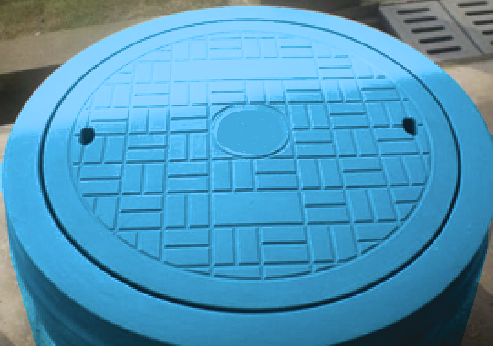

지속가능한 스마트 도시 인프라 구축 솔루션, 유니탑이앤씨
유니탑이앤씨는 ECO-UHPC(친환경 초고성능 콘크리트)를 자체 개발 및 특허등록하여, 건설에 필요한 토목·건축자재와 콘크리트 2차 제품, 모듈러 주택 등을 설계 및 제작하는 초고성능 콘크리트 전문기업입니다.
OSC(탈현장 건설) 시대를 맞아 설계, PC, 콘크리트 전문가들이 모여 철강 제품을 대체할 수 있는 건설자재와 건설에 혁명을 불러올 모듈러 주택 개발에 도전하고 있습니다. UHPC에 대한 기술력을 바탕으로 고객 니즈에 맞는 첨단 스마트 도시 인프라 솔루션을 제공합니다.

창업 논의에서 첫 제품 완성까지, 빠르게 성장하고 있습니다.
유니탑이앤씨가 만드는 소재의 여섯 가지 강점입니다.
압축강도 120~150MPa로 일반 콘크리트 대비 6~10배.
치밀한 조직으로 염해·동결융해에 강하고 부식이 없습니다.
180분 가열(최대 1,100℃)에도 폭렬 없이 기준을 만족합니다.
페로니켈슬래그(FNS) 등 산업부산물을 활용해 탄소배출 40%↓.
초고유동성으로 비정형 디자인과 맞춤 컬러를 구현합니다.
유지보수를 최소화해 생애주기비용을 절감, 주철 대비 20~25% 저렴.